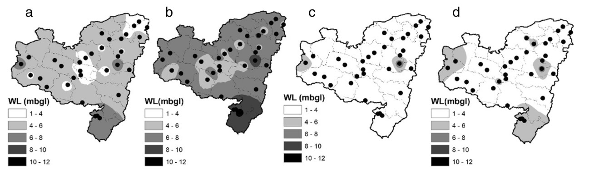
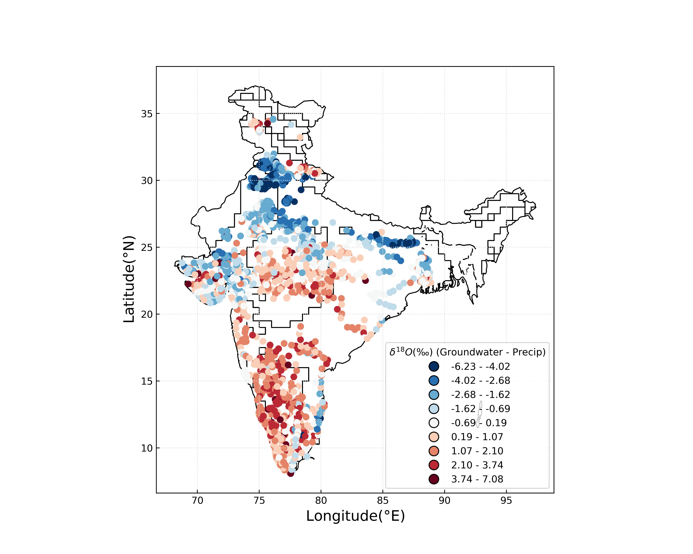

Mohan Sarkar
PhD Scholar, Centre for Climate Studies, IIT Bombay


Research Highlights

Assessing the impact of precipitation on hardrock aquifer system using standard precipitation index and groundwater resilience index: a case study of Purulia, West Bengal, India
Here you can write a brief summary or highlight of your research project. Keep it concise, providing a quick overview for the reader.
Read more

Groundwater isoscape developemnt
Currently we are working on developing developing groundwater isoscape for India using geospatial statistics.
Read moreFinding groundwater source contribution using isotope
Currently we are working on finding fractional contribution of different groundwater sources to its reacharge.
Read more